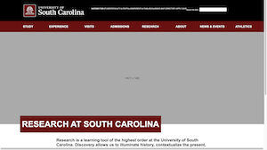
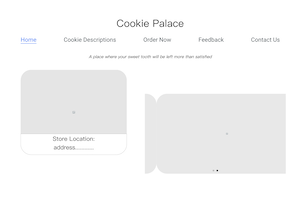

Darin Lee
CSCE 242 - Web Applications
Assignments
Assignment 1 - Basic HTML

Assignment 1 consists of the use of basic HTML skills with website design.
Assignment 2 - Basic CSS

Assignment 2 uses basic CSS skills to create a website.
Assignment 3 - Page Layout

Assignment 3 consists of the use of CSS flexbox to design a webpage layout.
Assignment 5 - Recreate CSS Page
Assignment 5 consists of recreating a CSS Page.
Assignment 6 - JavaScript, Buttons, Functions, and more

Assignment 6 uses code to create animations, inputs, and change the visibility of items.
Assignment 7 - Conditionals
Assignment 7 consists of using conditionals
Assignment 8 - Loops

Assignment 8 uses loops to animate a person running and a bar raising for fundraising.
Assignment 9 - Arrays
Assignment 9 consists of using a loop to rotate between quotes and creating a rainbow
Projects
Semester Project Part 1: Topic Selection
This project part is the idea of what things the project website will include.
Semester Project Part 1: Wireframes
The first part of the semester project, creating a wireframe.